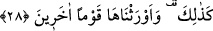
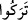
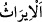

28. İşte böyle oldu ve biz onları başka bir topluma mîrâs verdik.
“İşte böyle oldu” Burada kâf nasb makamındadır. “
/Zâlike” kelimesi “
/terakû”
fiilinin delâlet ettiği bir fiilin masdarına işâret etmektedir. Yani işte böylece onları bu
nîmetlerden soyup aldık, demektir.
“Biz onları başka bir topluma mîrâs verdik” Bu ifâde mukadder bir fiile mâtûftur. “
/Îrâs” bu nîmetlerin mülkünü sonraki nesil ve kavme devretmektir. Yahut vâris
olanın sâhip olduğu mîrastaki tasarrufu gibi bu mallarda onlara tasarruf ve faydalanma
imkânı verdik, demektir. Yani Mısırlı Kıptîlerin mallarını onlarla din ya da akrabalık
bağı bulunmayan İsrâil oğullarına verdik. Halbuki İsrâil oğulları onların emirlerine
âmâde köleler idiler. Allah Teâlâ Kıptîleri helâk edip onların yurt, mal ve mülklerini
İsrâil oğullarına mîras bıraktı. Kıptîlerin helâkinden sonra onlara İsrâil oğullarından
başkalarının mîrasçı olduğu da söylenmiştir. Çünkü İsrâil oğulları Kıptîlerin helâkinden
sonra Mısır’a dönmemişlerdir.
Katâde şöyle demiştir: Meşhur târih kitaplarında İsrâil oğullarının tekrar Mısır’a
döndükleri ve Mısır’a hükümrân oldukları rivâyet edilmemiştir. Ancak bu görüş târih
kitaplarında pek çok yalan olmasından dolayı reddedilmiştir. Bu sebeple târih
kitaplarına îtibâr edilemez. En doğru sözlü olan ise Allah’tır. Müftü Sâdî’nin Havâşî
adlı eseri gibi eserlerde şâirlerden Allah Teâlâ’nın İsrâil oğullarını Kıptîlere vâris
kıldığına dâir açık beyânlar gelmiştir.
Müfessirler Allah Teâlâ’nın “Umulur ki Rabbiniz düşmanınızı yok eder ve onların
yerine sizi yeryüzüne hâkim kılar da sizin nasıl hareket edeceğinize bakar” (el-
A‘râf, 7/129) kavlinin îzâhında şöyle demişlerdir. Yani Allah Teâlâ sizi Mısır
topraklarına yahut Arz-ı Mukaddese’ye halife yapacaktır. Yine Allah Teâlâ’nın “Hor
görülüp ezilmekte olan milleti de içini bereketlerle donattığımız yerin doğularına
ve batılarına mirasçı kıldık” (el-A‘râf, 7/137) kavlinin îzâhında bahse konu olan yer
Şam topraklarıdır. Yerin doğu ve batıları ise Şam’ın doğu ve batısıdır. Tîh sahrasındaki
cezâ müddetleri dolunca Firavunlardan ve Amâlika’dan sonra İsrâil oğulları Şam’a
hâkim ve mâlik olmuşlar ve Şam’ın her tarafına yerleşmişlerdir. Müfessirler bazen bu
yeri Mısır toprakları, bazen de Şam toprakları olarak yorumlamışlardır. Zâhir olan
ikinci görüştür. Yani bu yerin Şam toprakları olduğudur. Çünkü akla uygun gelen ezilip
sömürülenlerin çocuklarının değil, bizzat kendilerinin bu topraklarda hükümrân
kılınmasıdır. Mısır’a ise İsrâil oğullarının kendileri değil, torunları hükümrân olmuştur.
Çünkü Mısır, Hz. Dâvûd (a.s.) zamanında fethedilmiştir. Gerçi bu yerin hem Şam, hem
de Mısır olarak her ikisine de hamledilmesi mümkündür. Ezilip sömürülenlerden murâd
ise İsrâil oğullarının hem kendileri, hem de torunlarıdır. Zîrâ babalara nispet edilen
sıfat, onların çocuklarına da nispet edilir. En iyisini Allah bilir.
Âyete şöyle işârî bir mânâ da verilmiştir. Kişi fazîlet denizini zikir değneği ile